여행 플래너 ‘gilow’
사이트 바로 가기 ↗여행 계획부터 실제 여행, 여행 후 기록까지 하나의 여정으로 연결하는 Travel Planner
PC에서는 일정과 지도를 나란히 보며 계획하고, Mobile에서는 일정 목록과 지도 모드로 이동 정보를 확인
Drag & Drop 여정 편집, 예약 바우처 연결, 영수증 기반 경비 기록까지 하나의 흐름으로 구축
여행 준비는 여러 앱을 오가느라 번거로웠습니다. PC로 계획하고 바우처와 가계부까지 한곳에 모으고 싶어 직접 만들었습니다.
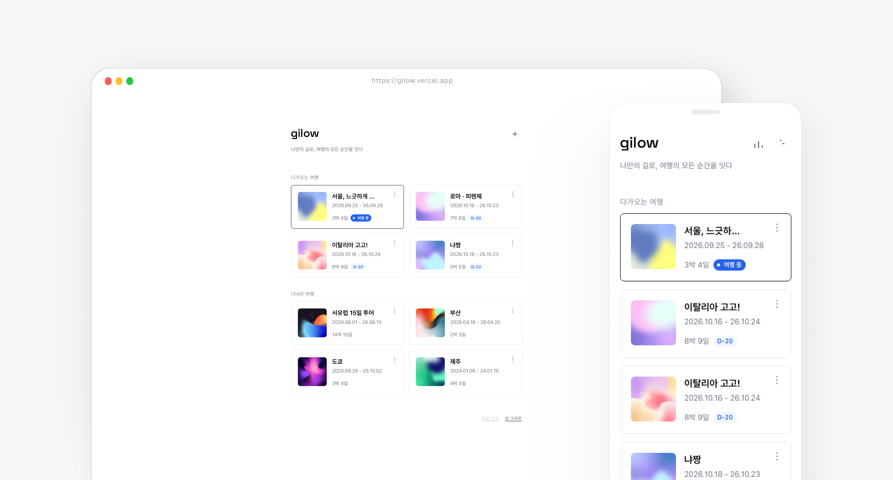
현안 → 전략
현안
전략
01
계획과 실제 여행의 단절
PC에서 계획하고
여행 중에는 모바일 지도와 예약 정보를
따로 확인해야 함
PC–Mobile 여행 경험 연결
PC는 일정과 지도를 나란히,
Mobile은 일정 목록과 지도 모드로 나눠
하나의 여행 데이터로 연결
02
일정 편집의 번거로움
장소를 추가한 뒤 날짜와 순서를 바꾸려면 반복 입력이 필요함
장소 추가 → 순서 변경 → 거리 확인 → 여정 완성
Drag & Drop 기반 여정 편집
장소를 카드로 만들어
끌어서 순서와 일정을 변경
03
예약·이동·기록 정보의 분산
예약은 바우처에, 이동은 지도에,
경비는 별도 가계부에 흩어져 있음
여행 데이터를 다음 행동으로 연결
Voucher → Schedule 예약 서류를 일정에 첨부
Place → Route 장소를 추가하면 거리·동선 확인
Receipt → Expense 영수증을 경비로 기록
04
지도 데이터와 서비스 비용의 한계
Google Maps 기반 MVP에서 장소 API 비용 부담을 확인
저비용 대체 서비스는 상세정보와 데이터 품질이 부족
지도 서비스를 대체하지 않고 역할 분리
Google Map Tile로 지도 경험을 유지하고
해외 → Google Maps
국내 → Naver Map
으로 연결해 상세 장소정보와 길찾기를 맡김
퍼소나 & 여정
자유여행자
여행 전에는 장소와 예약 정보를 정리하고, 여행 중에는 오늘 일정과 이동 경로를 빠르게 확인하고 싶은 사용자
그래서, 여행자의 여정은 이렇게 이어집니다
여행지와 장소 탐색
장소를 검색해 여행에 추가
→ 날짜별 일정에 배치
여정 만들기
장소 카드를 Drag & Drop
→ 순서 변경
→ 거리·이동 동선 확인
예약 정보 연결
바우처를 일정에 첨부
→ 보관함에서 한곳에 확인
Mobile에서 여행
일정·지도 모드로 당일 동선 확인
→ 상세 정보나 길찾기 필요 시
→ 구글, 네이버 지도로 이동
여행 비용 기록
영수증 수집
→ 지출 기록
→ 경비·통계 확인
MVP 정의
검증하려는 가설 · “하루 단위 일정 + 지도 + 기록”이 하나로 이어지면, 여행자는 여러 앱을 오가지 않고 여행 하나를 이 서비스에서 끝까지 관리한다.
MVP — 반드시 있어야 하는 것
1. 구글·카카오 로그인
2. 여행 만들기(목적지·기간)
3. 일차별 일정 추가·수정·삭제·순서 변경
4. 장소 검색과 일정 담기
5. 지도 경로와 장소 간 이동 거리·시간
6. 가계부(지출 기록, 여행지 통화 → 원화)
7. 일정에 사진·파일 첨부, 보관함에서 모아 보기
8. 여행 정보(환율·시차·날씨)
검증 기준 (목표)
· 여행 1건을 앱 안에서 처음부터 끝까지 만들 수 있다
· 장소 검색 후 일정에 담기까지 3번 안에 끝난다
· 여행을 열 때 “불러오는 중” 대기가 보이지 않는다
· 모바일(iPhone)에서 한 손으로 조작할 수 있다
· 여행 중 필요한 서류·영수증을 앱에서 다시 찾을 수 있다
MVP 이후 실제로 확장한 것
· AI 추천 일정(도시·일수·관심사 기반 초안)
· 구글 지도 저장 목록(CSV) 가져오기
· 영수증 사진으로 지출 자동 입력
· 여행 공유 링크
· 다녀온 여행 표지(앨범 경험, 나의 사진 업로드)
· 가입자 통계(관리자)
가설 → 검증 → 재설계
1
처음의 가설
“지도와 장소 정보까지 한 서비스에서 제공하면 더 편리하지 않을까?”
2
실제 구현
Google Maps 기반으로
장소 검색 · 지도 · 일정 · 동선 구현
3
실제 사용
실제 데이터로 일정을 구성하며 API 구조와 장소 정보 활용성 검증
4
문제 발견
API 비용 + 대체 서비스의
데이터 품질 문제
5
재설계
모든 것을 직접 제공하지 않고 여행 계획 중심으로 기존 지도 서비스와 연결하는 구조로 전환
데이터의 흐름
한 여행을 중심으로 장소·일정·지출이 연결되고, 첨부 파일은 보관함으로 모임
User
구글·카카오 계정
세션 쿠키
→
Trip
이름 · 기간 · 지역
출·도착 정보
→
Place
이름 · 좌표 · 카테고리
외부 지도 링크
→
ScheduleItem
일차 · 시간 · 순서
메모 · 첨부
→
Expense
금액 · 통화 · 결제수단
영수증 · 일정 연결
A · 일정 만들기 흐름
장소 검색 (카카오·Wikidata·Geoapify)
→
후보 선택
→
Place 저장
→
ScheduleItem 생성
→
좌표로 경로·거리 계산
B · 기록 모으기 흐름
일정 첨부(사진·파일)
→
ScheduleItem에 저장
→
지출 입력 + 영수증
→
Expense에 저장
→
보관함에 자동 분류
C · 화면 반영 흐름
사용자 조작
→
화면에 먼저 반영
→
서버에 저장
→
실패 시 되돌림 / 성공 시 재조회
Highlight 01 · Itinerary
장소를 옮기는 것만으로 여정이 바뀐다
여행 일정의 핵심 행동을 ‘입력’이 아니라 ‘배치’로 정의
장소를 추가하면 일정 카드가 생기고, Drag & Drop으로 순서를 바꾸면 동선도 함께 확인
머릿속에 그린 여행을 화면에서 직접 움직이며 완성하도록 설계
Add Place → Drag & Drop → Route
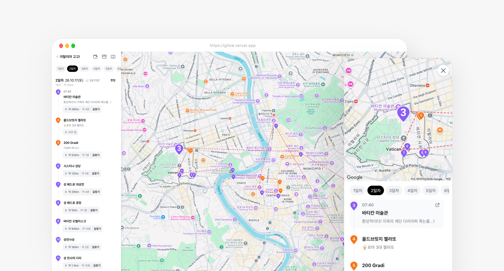
Highlight 02 · Voucher → Schedule
예약 서류가 일정 안으로 들어온다
바우처를 따로 저장하는 폴더가 아니라 여행 일정의 일부로 다룸
항공권·예약 확인서를 일정에 첨부하면 보관함에서 바우처 · 영수증 · 사진으로 자동 분류
메일·사진첩에서 서류를 다시 찾는 단계를 줄이고, 필요한 순간 그 일정에서 바로 열어보는 경험
Attach to Schedule → Voucher Storage
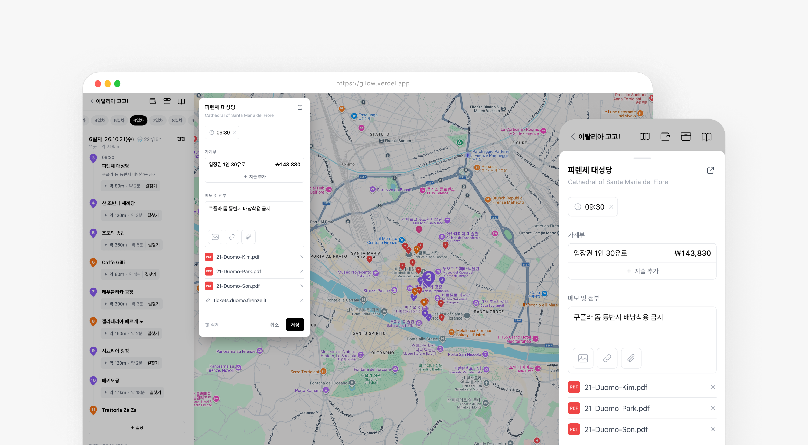
그 외 주요 화면
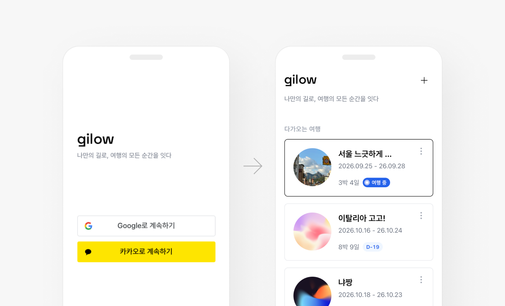
Login
별도 가입 없이 구글·카카오 계정으로 바로 시작
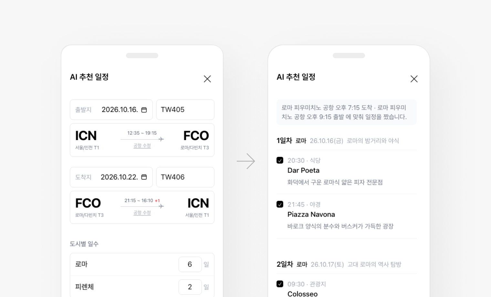
AI Itinerary
여행지와 기간을 입력하면 AI가 기본 일정을 생성하고 직접 수정
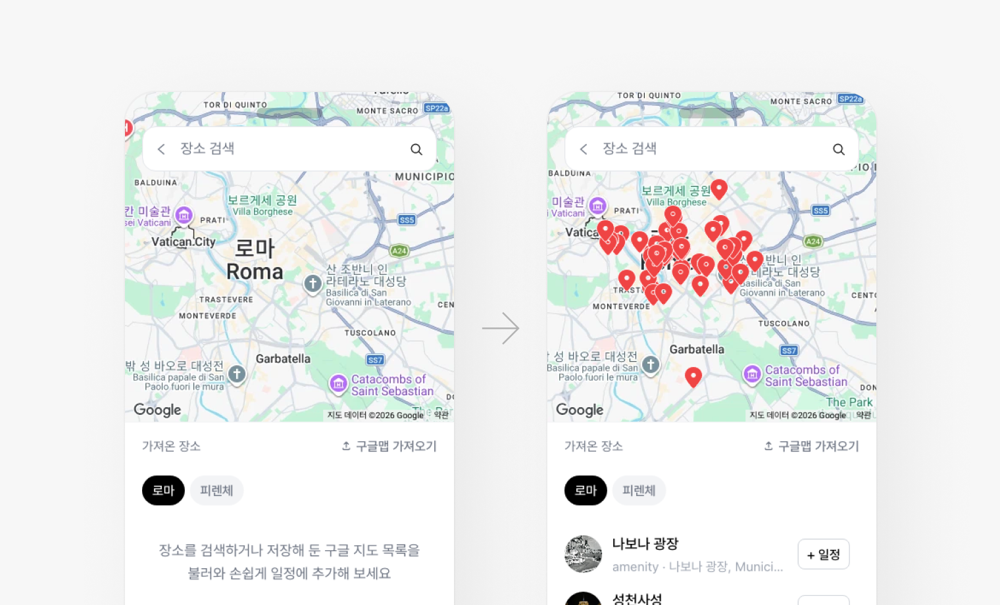
Google Maps Import
구글 지도에 저장한 장소 목록(CSV)을 가져와 일정에 바로 활용
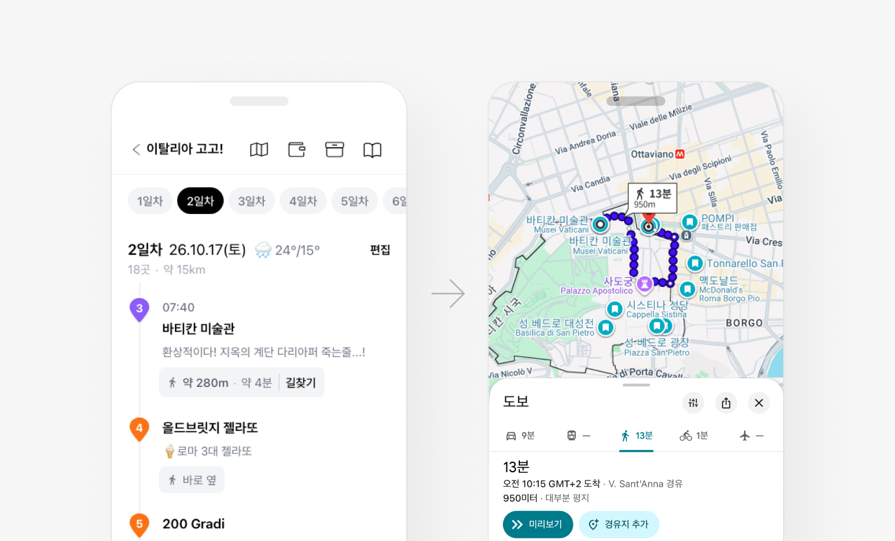
Route
장소 간 거리와 동선을 확인하고 길찾기는 구글·네이버 지도로 연결
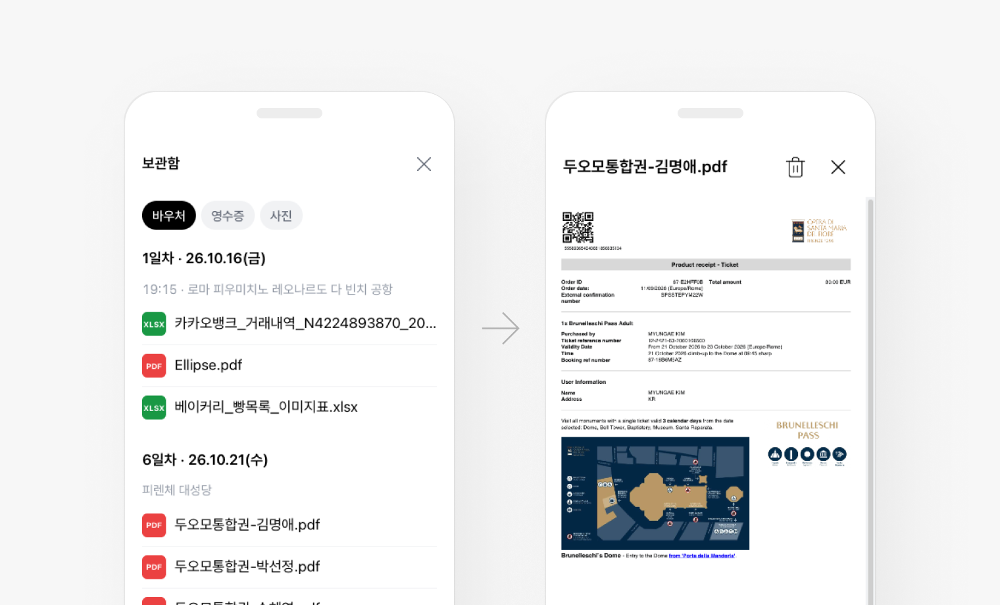
Voucher
항공·숙소·투어 등 예약 정보를 한곳에 보관
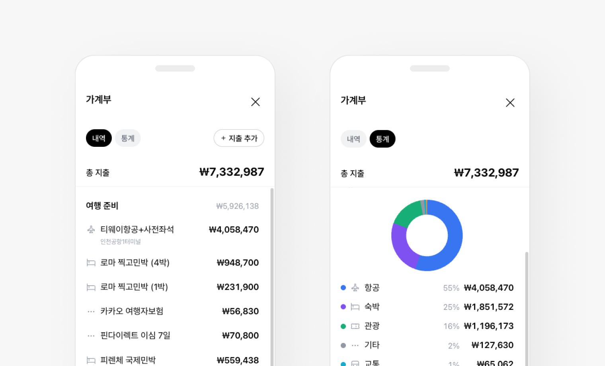
Receipt
영수증을 모아 지출로 기록하고 카테고리별 지출과 전체 경비 확인
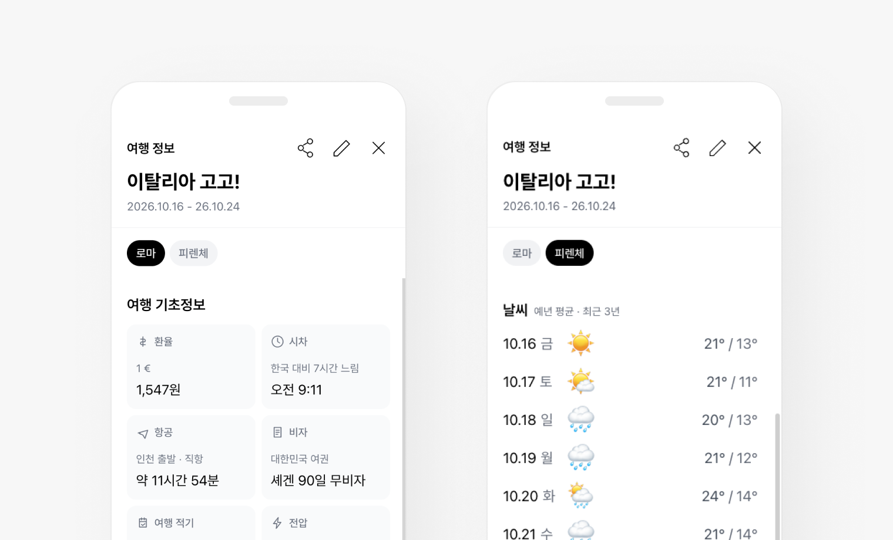
Trip Info
환율·시차·항공 시간·비자·전압, 여행 기간 날씨를 도시별로 확인
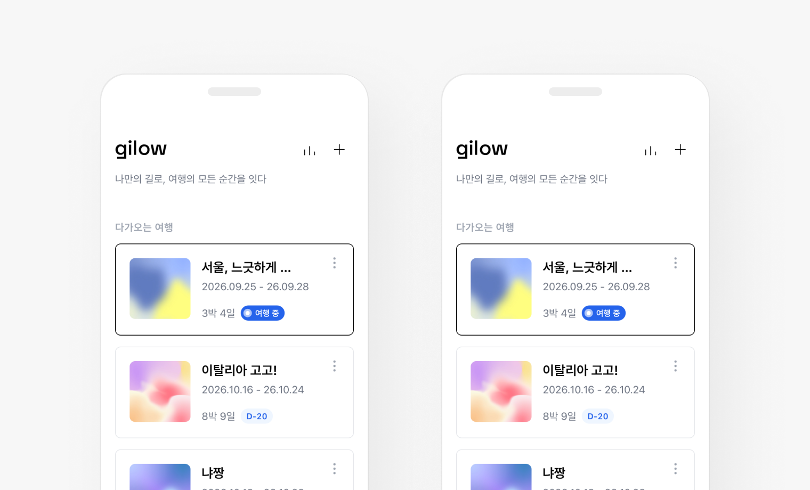
Cover · Share
다녀온 여행은 대표 사진 표지로 열리고, 링크로 일정 공유
결과
PC–모바일 간 흩어진 준비 데이터를 통합하고 Drag & Drop 편집으로 일정 구성의 번거로움을 단순화,
장소·바우처·영수증을 지도 및 가계부와 연동해 여행 계획 경험을 재설계
01 · 분절된 여행 경험
PC–Mobile을 연결한
하나의 여행 데이터로 통합
02 · 복잡한 일정 편집
장소 Drag & Drop 기반의
직관적인 여정 편집
03 · 흩어진 여행 정보
장소·바우처·영수증을
일정·이동·가계부로 연결
04 · 지도 데이터와 비용 문제
Google Map Tile +
Google/Naver 연동 구조로 재설계